Captura Oficial de Examen
Guía de estudio exhaustiva: 15 ejercicios resueltos paso a paso en papel con su captura oficial de examen, masterclass de Simplex desde cero, banco de teoría completo y simulador.
Si sentís que no entendés nada, empezá acá. Todo el 2do parcial se basa en 5 modelos matemáticos elementales explicados con analogías cotidianas y rigor conceptual.
La Programación Lineal es el método para tomar la mejor decisión económica (maximizar utilidades o minimizar costos) cuando tenés recursos limitados (horas hombre, capacidad de máquina, stock de insumos, capital de trabajo).
El conjunto de todas las combinaciones que cumplen las restricciones forma una figura geométrica llamada Poliedro Convexo.
La ley suprema: Si existe solución óptima, está obligatoriamente en un VÉRTICE (esquina) de ese poliedro. ¡Por eso Simplex no prueba infinitos puntos, sólo viaja de vértice en vértice!
| Hipótesis | Definición Matemática Rigurosa | Ejemplo Práctico de Fábrica |
|---|---|---|
| 1. Proporcionalidad | La contribución a la FO y el consumo de cada insumo es estrictamente proporcional a la actividad (\(c_j x_j\) y \(a_{ij} x_j\)). | Hacer 1 torta insume 2 huevos y deja $10; hacer 100 tortas insume exactamente 200 huevos y deja $1.000. No hay descuentos por cantidad. |
| 2. Aditividad | El valor total de la FO y el uso total de insumos es la suma directa de lo consumido por cada producto, sin sinergias. | La ganancia total de fabricar mesas y sillas es la ganancia de las mesas más la de las sillas. No hay efectos cruzados ni interferencias. |
| 3. Divisibilidad | Las variables de decisión son continuas (\(x_j \in \mathbb{R}_{\ge 0}\)). Pueden adoptar cualquier valor fraccionario o decimal. | Podés fabricar 4.35 litros de pintura o 12.8 toneladas de cemento. (Si exige enteros como autos o barcos, es Programación Entera). |
| 4. Certeza (Determinismo) | Todos los coeficientes (\(c_j, a_{ij}, b_i\)) se conocen de antemano con 100% de certidumbre matemática y son constantes. | Se sabe exactamente el costo de la harina y las horas de torno; no hay inflación imprevista ni roturas aleatorias. |
Para resolver algebraicamente en una tabla, las inecuaciones (\(\le, \ge\)) se deben transformar obligatoriamente en igualdades (\(=\)):
| Signo Inecuación | Variable Auxiliar | Operación | Significado en la Vida Real | Costo en la FO |
|---|---|---|---|---|
| \(\le\) (Menor o igual) | Holgura (\(s_i\)) | Se SUMA: \(+ s_i\) | Representa la capacidad del recurso que sobró sin usar en el galpón. | 0 (no aporta beneficio directo) |
| \(\ge\) (Mayor o igual) | Exceso (\(e_i\)) | Se RESTA: \(- e_i\) | Representa la cantidad que se superó por encima del mínimo exigido. | 0 |
| \(\ge\) o \(=\) (Igualdad) | Artificial (\(a_i\)) | Se SUMA: \(+ a_i\) | Muleta matemática transitoria para arrancar la base identidad. No existe en la realidad. | Penalización \(\pm M\) (\(M \to +\infty\)) |
El Precio Sombra (\(y_i^*\)) es la variación que experimenta el beneficio óptimo (\(Z^*\)) cuando la disponibilidad del recurso \(b_i\) se incrementa en una unidad marginal. Representa el precio máximo que te convendría pagar por una unidad extra de ese insumo en el mercado.
$$s_i^* \times y_i^* = 0$$
$$Z_{\text{primal}}^* = W_{\text{dual}}^*$$
En el punto óptimo, la ganancia máxima que el fabricante puede lograr (\(Z^*\)) coincide exactamente con el valor total de los insumos consumidos valorizados a sus precios sombra (\(W^*\)).
| Situación Detectada en el PRIMAL | Correspondencia Obligatoria en el DUAL | Criterio Técnico de Corrección |
|---|---|---|
| Solución Única Acotada | Solución Única Acotada | \(Z^* = W^*\). Las variables básicas tienen costos reducidos nulos. |
| Solución No Acotada (Poliedro Abierto) | INCOMPATIBLE (Sin región factible) | Si \(Z \to +\infty\), el dual no puede acotar por arriba, por lo que no existe solución factible dual. |
| Soluciones Óptimas Múltiples (Alternativas) | Solución DEGENERADA (variable básica en cero) | \((z_j - c_j) = 0\) en variable no básica en el primal implica vértice compartido en el dual. |
| Problema Incompatible | Incompatible o No Acotado | Restricciones contradictorias en el primal impiden existencia de región factible. |
En el parcial suelen preguntarte explícitamente: "Indique a qué modelo matemático corresponde y justifique". Usá esta regla de reconocimiento infalible:
| Modelo | Palabras Clave en el Enunciado | Estructura de Variables | Condición Distintiva |
|---|---|---|---|
| Programación Lineal (PLC) | Mezcla, producción mensual, materias primas escasas, precios sombra, horas de torno, ración balanceada. | \(x_j \ge 0\) continuas [unidades/tiempo]. | Restricciones con coeficientes variados (\(a_{ij}\)). Se resuelve por Simplex. |
| Transporte | Fábricas/Plantas que envían a Mercados/Depósitos, costos por flete, capacidades de oferta y requerimientos de demanda. | \(x_{ij} \ge 0\) (unidades de origen \(i\) a destino \(j\)). | \(\sum O_i = \sum D_j\). Coeficientes en restricciones son estrictamente 1. Total Unimodularidad. |
| Asignación | Personas a puestos, nadadores a estilos de relevo, máquinas a tareas, ingenieros a obras. Relación 1 a 1. | Binarias puras: \(x_{ij} \in \{0, 1\}\). | Matriz estrictamente cuadrada (\(n \times n\)). Ofertas y demandas son todas 1. Método Húngaro. |
| Inventarios | Lote económico, costo de emitir pedido/setup (\(k\)), costo de almacenamiento (\(c_1\)), demanda anual (\(D\)), galpón \(m^2\). | \(Q\) (tamaño de lote a pedir/fabricar). | Compromiso entre pedir muchas veces o almacenar. Modelo de Wilson (\(Q^* = \sqrt{2kD/c_1}\)) o Lagrange. |
| Redes / Grafos | Ruta más corta entre \(s\) y \(t\), tiempo mínimo de traslado, cuarteles de bomberos que cubran zonas en \(\le 15\) min. | Aristas con peso \(d_{ij} \ge 0\), o binarias de localización \(y_j \in \{0, 1\}\). | Dijkstra (caminos) o Set Covering (localización). Simplex NO se puede usar en Set Covering por ser entero. |
Guía definitiva para entender el algoritmo sin frustraciones: cómo armar la tabla, cómo saber quién entra y quién sale, cómo hacer el pivoteo de Gauss-Jordan con lápiz y papel, y cómo leer la solución final.
En cada tabla, mirás únicamente la fila de evaluación \((z_j - c_j)\) de las variables que no están en la base actual:
Para cada fila básica, dividís el lado derecho \(b_i\) por el número de la columna pivote (\(y_{ik}\)):
Resolvamos paso a paso el problema de examen clásico:
Paso 0: Estandarización. Como son todas restricciones de menor o igual (\(\le\)), sumamos las variables de holgura \(+s_1, +s_2, +s_3\):
\(x_1 + s_1 = 4\) | \(2x_2 + s_2 = 12\) | \(3x_1 + 2x_2 + s_3 = 18\).
En la Función Objetivo las holguras entran con costo cero: \(\text{Max } Z = 3x_1 + 5x_2 + 0 s_1 + 0 s_2 + 0 s_3\).
| Base | \(C_B\) | \(x_1\) (\(c=3\)) | \(x_2\) (\(c=5\)) | \(s_1\) (\(c=0\)) | \(s_2\) (\(c=0\)) | \(s_3\) (\(c=0\)) | \(b_i\) (LD) | Cociente \(\theta = b_i / y_{ik}\) |
|---|---|---|---|---|---|---|---|---|
| \(s_1\) | 0 | 1 | 0 | 1 | 0 | 0 | 4 | \(4 / 0 \to\) No aplica |
| \(s_2\) | 0 | 0 | [2] PIVOTE | 0 | 1 | 0 | 12 | \(\theta = 12 / 2 = 6\) (MENOR \(\implies\) SALE \(s_2\)) |
| \(s_3\) | 0 | 3 | 2 | 0 | 0 | 1 | 18 | \(\theta = 18 / 2 = 9\) |
| Fila \(z_j\) | 0 | 0 | 0 | 0 | 0 | \(Z = 0\) | — | |
| Fila \((z_j - c_j)\) | \(0 - 3 = -3\) | \(0 - 5 = -5\) (MÁS NEG.) | 0 | 0 | 0 | — | ENTRA \(x_2\) a la Base | |
1. Fila 2 Nueva (Fila Pivote): Dividimos toda la Fila 2 vieja por el elemento pivote (2):
\([0/2, 2/2, 0/2, 1/2, 0/2, 12/2] \implies \mathbf{[0, 1, 0, 0.5, 0, 6]}\).
2. Fila 1 Nueva: Como ya tenía un 0 en la columna \(x_2\), queda idéntica: \(\mathbf{[1, 0, 1, 0, 0, 4]}\).
3. Fila 3 Nueva: Tenía un 2 en la columna \(x_2\). Restamos \(2 \times \text{Fila 2 Nueva}\):
\([3, 2, 0, 0, 1, 18] - 2 \times [0, 1, 0, 0.5, 0, 6] = [3-0, 2-2, 0-0, 0-1, 1-0, 18-12] \implies \mathbf{[3, 0, 0, -1, 1, 6]}\).
| Base | \(C_B\) | \(x_1\) (\(c=3\)) | \(x_2\) (\(c=5\)) | \(s_1\) (\(c=0\)) | \(s_2\) (\(c=0\)) | \(s_3\) (\(c=0\)) | \(b_i\) (LD) | Cociente \(\theta = b_i / y_{ik}\) |
|---|---|---|---|---|---|---|---|---|
| \(s_1\) | 0 | 1 | 0 | 1 | 0 | 0 | 4 | \(\theta = 4 / 1 = 4\) |
| \(x_2\) | 5 | 0 | 1 | 0 | 0.5 | 0 | 6 | \(6 / 0 \to\) No aplica |
| \(s_3\) | 0 | [3] PIVOTE | 0 | 0 | -1 | 1 | 6 | \(\theta = 6 / 3 = 2\) (MENOR \(\implies\) SALE \(s_3\)) |
| Fila \(z_j\) | 0 | 5 | 0 | 2.5 | 0 | \(Z = 30\) | — | |
| Fila \((z_j - c_j)\) | \(0 - 3 = -3\) (NEGATIVO) | \(5 - 5 = 0\) | 0 | \(2.5 - 0 = +2.5\) | 0 | — | ENTRA \(x_1\) a la Base | |
1. Fila 3 Nueva (Fila Pivote): Dividimos Fila 3 vieja por 3:
\([3/3, 0/3, 0/3, -1/3, 1/3, 6/3] \implies \mathbf{[1, 0, 0, -1/3, 1/3, 2]}\).
2. Fila 1 Nueva: Restamos \(1 \times \text{Fila 3 Nueva}\):
\([1, 0, 1, 0, 0, 4] - [1, 0, 0, -1/3, 1/3, 2] \implies \mathbf{[0, 0, 1, 1/3, -1/3, 2]}\).
3. Fila 2 Nueva: Ya tenía un 0 en la columna \(x_1\), queda intacta: \(\mathbf{[0, 1, 0, 1/2, 0, 6]}\).
| Base | \(C_B\) | \(x_1\) (\(c=3\)) | \(x_2\) (\(c=5\)) | \(s_1\) (\(c=0\)) | \(s_2\) (\(c=0\)) | \(s_3\) (\(c=0\)) | \(b_i\) (LD) | Estado Físico del Recurso |
|---|---|---|---|---|---|---|---|---|
| \(s_1\) | 0 | 0 | 0 | 1 | 1/3 | -1/3 | 2 | Sobran 2 kg de Materia Prima A |
| \(x_2\) | 5 | 0 | 1 | 0 | 1/2 | 0 | 6 | Fabricar 6 unidades del Producto 2 |
| \(x_1\) | 3 | 1 | 0 | 0 | -1/3 | 1/3 | 2 | Fabricar 2 unidades del Producto 1 |
| Fila \(z_j\) | 3 | 5 | 0 | 1.5 | 1.0 | \(Z^* = 36\) | — | |
| Fila \((z_j - c_j)\) | 0 | 0 | 0 | +1.5 | +1.0 | — | ¡TODOS \(\ge 0\)! CONDICIÓN DE ÓPTIMO CUMPLIDA | |
En los parciales suelen darte una tabla intermedia y preguntarte: "¿Qué caso especial se presenta aquí y cómo se refleja en el dual?":
| Lo que Ves en la Tabla Simplex | Diagnóstico Técnico | Explicación en Papel |
|---|---|---|
| Una variable no básica tiene \((z_j - c_j) < 0\), pero todos los números de su columna son \(\le 0\). | Solución No Acotada (Poliedro Abierto) | No hay variable saliente porque no se puede calcular \(\theta\). La variable puede crecer al infinito haciendo \(Z \to +\infty\). En el dual, la región es INCOMPATIBLE. |
| En la tabla óptima (todos \(\ge 0\)), una variable NO BÁSICA tiene \((z_j - c_j) = 0\). | Soluciones Óptimas Múltiples (Alternativas) | Esa variable puede entrar a la base sin modificar \(Z^*\). La recta de la FO es paralela a una restricción activa. En el dual, hay solución degenerada. |
| En la columna \(b_i\), una variable básica tiene valor 0. | Solución Degenerada | Ocurre cuando tres o más restricciones se cortan en un mismo punto del plano. Puede generar bucles infinitos de pivoteo si no se aplican reglas especiales. |
| Todos los \((z_j - c_j) \ge 0\), pero queda una variable artificial \(a_i\) en la base con valor \(> 0\). | Problema Incompatible (Sin Región Factible) | Las restricciones se contradicen entre sí (ej: \(x \le 2\) y a la vez \(x \ge 6\)). No existe ningún punto que satisfaga el sistema simultáneamente. |
5 ejercicios reales de parcial y cátedra completamente resueltos paso a paso en papel, con sus capturas oficiales originales y criterios de corrección.
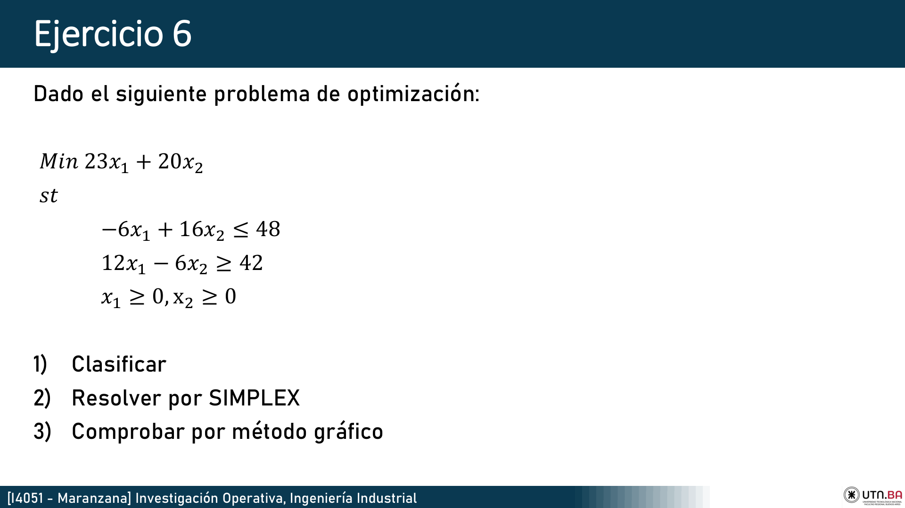
• Restricción 1 (\(\le\)): Sumamos holgura \(+s_1\) con costo 0.
• Restricción 2 (\(\ge\)): Restamos exceso \(-e_2\) (costo 0) y sumamos artificial \(+a_2\) con penalización \(+M\) (\(M \to +\infty\)):
$$-6 x_1 + 16 x_2 + s_1 = 48$$
$$12 x_1 - 6 x_2 - e_2 + a_2 = 42$$
$$\text{FO: } \text{Min } Z = 23 x_1 + 20 x_2 + 0 s_1 + 0 e_2 + M a_2$$
La base inicial es \(\{s_1, a_2\}\). Como \(a_2\) está en la base con costo \(M\), la fila \(z_j = M \times \text{Fila } a_2 = [12M, -6M, 0, -M, M]\).
Fila de evaluación \((z_j - c_j)\):
• \(x_1\): \(12M - 23\)
• \(x_2\): \(-6M - 20\)
• \(e_2\): \(-M\)
En Minimización, entra la variable con el coeficiente MÁS POSITIVO de \((z_j - c_j)\): ¡Entra \(x_1\) (\(12M - 23\))!
Test del cociente \(\theta\):
• Fila 1 (\(s_1\)): \(y_{11} = -6 \le 0 \implies\) No se divide.
• Fila 2 (\(a_2\)): \(\theta = 42 / 12 = 3.5 \implies\) Sale \(a_2\). Elemento pivote = 12.
• Nueva Fila 2 (Pivote): Dividimos Fila 2 vieja por 12: \([12/12, -6/12, 0, -1/12, 1/12, 42/12] \implies \mathbf{[1, -0.5, 0, -1/12, 1/12, 3.5]}\).
• Nueva Fila 1: Tenía \(-6\) en columna \(x_1\). Sumamos \(6 \times \text{Nueva Fila 2}\):
\([-6 + 6(1), 16 + 6(-0.5), 1 + 0, 0 + 6(-1/12), 48 + 6(3.5)] \implies \mathbf{[0, 13, 1, -0.5, 69]}\).
Base nueva: \(\{s_1, x_1\}\) con costos \(C_B = [0, 23]\).
Fila \(z_j\): \(x_1 = 23\), \(x_2 = 23(-0.5) = -11.5\), \(s_1 = 0\), \(e_2 = -23/12\).
Fila \((z_j - c_j)\):
• \(x_2\): \(-11.5 - 20 = -31.5 \le 0\).
• \(e_2\): \(-23/12 - 0 = -1.92 \le 0\).
En Minimización, como todos los \((z_j - c_j) \le 0\), SE ALCANZÓ EL ÓPTIMO.
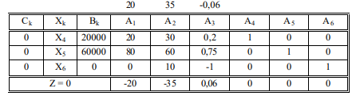
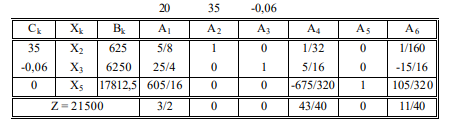
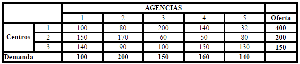
En la fila \((z_j - c_j)\) de la TOP (Captura 2), bajo las holguras leemos:
• \(y_1^*\) (Crema Base): $20 / litro (recurso saturado).
• \(y_2^*\) (Colágeno): $15 / gramo (recurso saturado).
• \(y_3^*\) (Horas de Envasado): $0 / hora (\(s_3^* = 14\) horas sobrantes).
La nueva crema requiere 2 litros de crema base, 1.5 gramos de colágeno y 0.5 horas de máquina. Su precio de venta neto es \(c_{\text{nueva}} = \$85\):
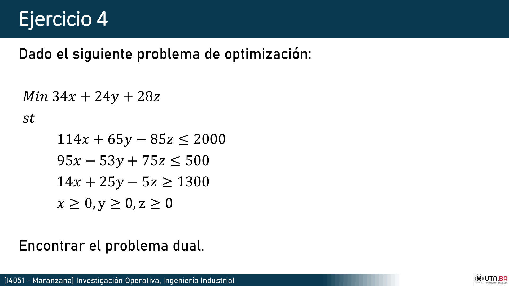
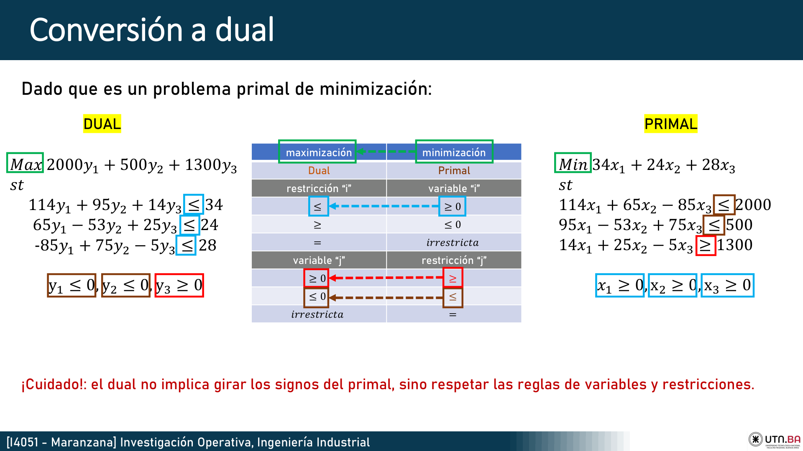
Asignamos una variable dual a cada restricción primal: \(u_1\) para (1), \(u_2\) para (2), \(u_3\) para (3).
• Restricción (1) es \(\le\) en Min \(\implies\) Variable dual \(u_1 \le 0\).
• Restricción (2) es \(\le\) en Min \(\implies\) Variable dual \(u_2 \le 0\).
• Restricción (3) es \(\ge\) en Min \(\implies\) Variable dual \(u_3 \ge 0\).
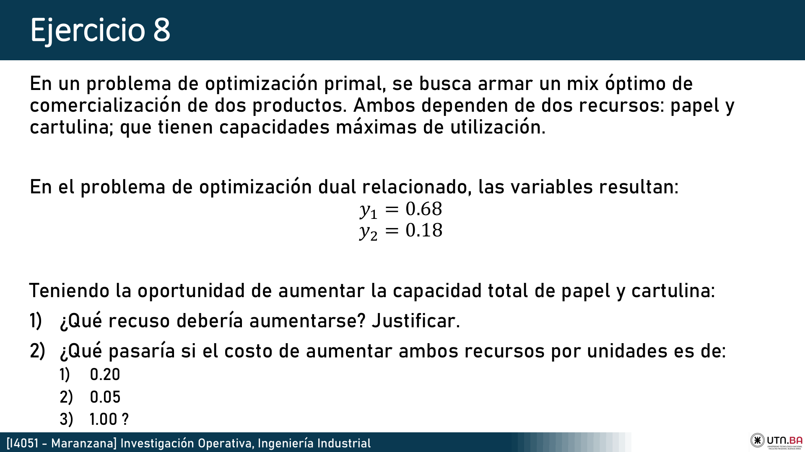
El problema dual arroja: \(y_1^* = 0.68\) (precio sombra del papel), \(y_2^* = 0.18\) (precio sombra de la cartulina).
• Pregunta 1: ¿Qué recurso debería aumentarse?
Debe aumentarse el PAPEL, ya que su precio sombra (\(y_1^* = 0.68\)) es casi 4 veces mayor al de la cartulina (\(y_2^* = 0.18\)), generando el mayor incremento en la función objetivo por unidad adicional incorporada.
• Pregunta 2: ¿Qué pasa si el costo de ampliación por unidad es:
a) $0.20: Conviene aumentar el papel (beneficio neto: \(0.68 - 0.20 = +0.48\)). No conviene la cartulina (\(0.18 < 0.20 \implies\) pérdida neta).
b) $0.05: Conviene aumentar ambos (papel aporta \(+0.63\) y cartulina aporta \(+0.13\)).
c) $1.00: No conviene aumentar ninguno (el costo $1.00 supera los precios sombra de ambos recursos).
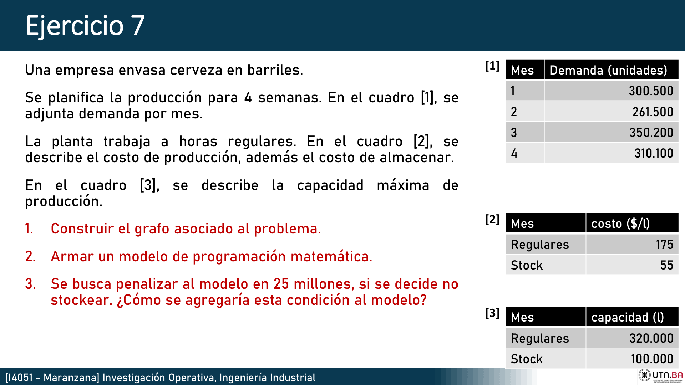
Para cada mes \(t \in \{1, 2, 3, 4\}\):
Variables: \(X_t\) = litros fabricados en el mes \(t\); \(I_t\) = litros almacenados al final del mes \(t\).
Balance de stock: \(I_{t-1} + X_t - I_t = D_t\).
Definimos una variable binaria \(y_t \in \{0, 1\}\) tal que:
• Si \(I_t > 0 \implies y_t = 1\) (se stockea, no hay penalización).
• Si \(I_t = 0 \implies y_t = 0\) (no se stockea, se penaliza con 25 millones).
Restricción con Big-M (\(M = \text{capacidad máxima de stock}\)):
Si \(I_t > 0\), la restricción fuerza a que \(y_t = 1\), anulando la penalización (\(1-1=0\)). Si \(I_t = 0\), el modelo puede elegir \(y_t = 0\), activando la penalización de $25 millones.
3 ejercicios reales de parcial y cátedra completamente resueltos paso a paso en papel: método de Vogel con penalizaciones, optimización con MODI, transbordo balanceado y penalización por déficit de stock.
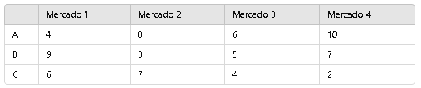
$$\sum \text{Oferta} = 50 + 60 + 70 = 180 \quad | \quad \sum \text{Demanda} = 30 + 50 + 40 + 60 = 180$$ La red está balanceada (\(\sum O_i = \sum D_j\)). No requiere nodos ficticios.
Calculamos las penalizaciones (diferencia entre los dos costos mínimos de cada línea):
• Fila 1: \(6 - 4 = 2\) | Fila 2: \(3 - 2 = 1\) | Fila 3: \(5 - 4 = 1\)
• Col 1: \(4 - 2 = 2\) | Col 2: \(6 - 5 = 1\) | Col 3: \(7 - 6 = 1\) | Col 4: \(4 - 3 = 1\)
Empate de penalización máxima en 2 (Fila 1 y Col 1). Criterio: elegimos la celda de menor costo absoluto: celda \((2,1)\) con costo 2.
1. Asignamos \(x_{21} = 30\) (satura M1). Queda Oferta P2 = 30.
2. Asignamos \(x_{24} = 30\) (menor costo \(c=3\)). Satura Oferta P2 = 0.
3. Asignamos \(x_{34} = 30\) (completa M4 con costo 4). Queda Oferta P3 = 40.
4. Asignamos \(x_{33} = 40\) (satura M3 con costo 6). Satura Oferta P3 = 0.
5. Asignamos \(x_{12} = 50\) (satura M2 y agota P1).
Número de básicas requerido: \(m + n - 1 = 3 + 4 - 1 = 6\) celdas.
Como obtuvimos 5 asignaciones, colocamos un \(\varepsilon = 0\) en la celda \((1,1)\) para cerrar la base.
Fijamos \(u_1 = 0\):
• Celda básica (1,1): \(u_1 + v_1 = 4 \implies v_1 = 4\).
• Celda básica (1,2): \(u_1 + v_2 = 6 \implies v_2 = 6\).
• Celda básica (2,1): \(u_2 + v_1 = 2 \implies u_2 = 2 - 4 = -2\).
• Celda básica (2,4): \(u_2 + v_4 = 3 \implies v_4 = 3 - (-2) = 5\).
• Celda básica (3,4): \(u_3 + v_4 = 4 \implies u_3 = 4 - 5 = -1\).
• Celda básica (3,3): \(u_3 + v_3 = 6 \implies v_3 = 6 - (-1) = 7\).
Evaluación de no básicas (\(\Delta_{ij} = c_{ij} - u_i - v_j\)):
• \(\Delta_{13} = 8 - 0 - 7 = +1 \ge 0\)
• \(\Delta_{14} = 7 - 0 - 5 = +2 \ge 0\)
• \(\Delta_{22} = 5 - (-2) - 6 = +1 \ge 0\)
• \(\Delta_{23} = 7 - (-2) - 7 = +2 \ge 0\)
• \(\Delta_{31} = 5 - (-1) - 4 = +2 \ge 0\)
• \(\Delta_{32} = 8 - (-1) - 6 = +3 \ge 0\)
Como todos los \(\Delta_{ij} \ge 0\), LA SOLUCIÓN ES EL ÓPTIMO GLOBAL.
| Tramo de Transporte | Cantidad Enviada | Costo Unitario | Subtotal |
|---|---|---|---|
| Planta 1 \(\to\) Mercado 2 (\(x_{12}\)) | 50 unidades | $6 | $300 |
| Planta 2 \(\to\) Mercado 1 (\(x_{21}\)) | 30 unidades | $2 | $60 |
| Planta 2 \(\to\) Mercado 4 (\(x_{24}\)) | 30 unidades | $3 | $90 |
| Planta 3 \(\to\) Mercado 3 (\(x_{33}\)) | 40 unidades | $6 | $240 |
| Planta 3 \(\to\) Mercado 4 (\(x_{34}\)) | 30 unidades | $4 | $120 |
| COSTO TOTAL MÍNIMO (\(Z^*\)) | $810 | ||
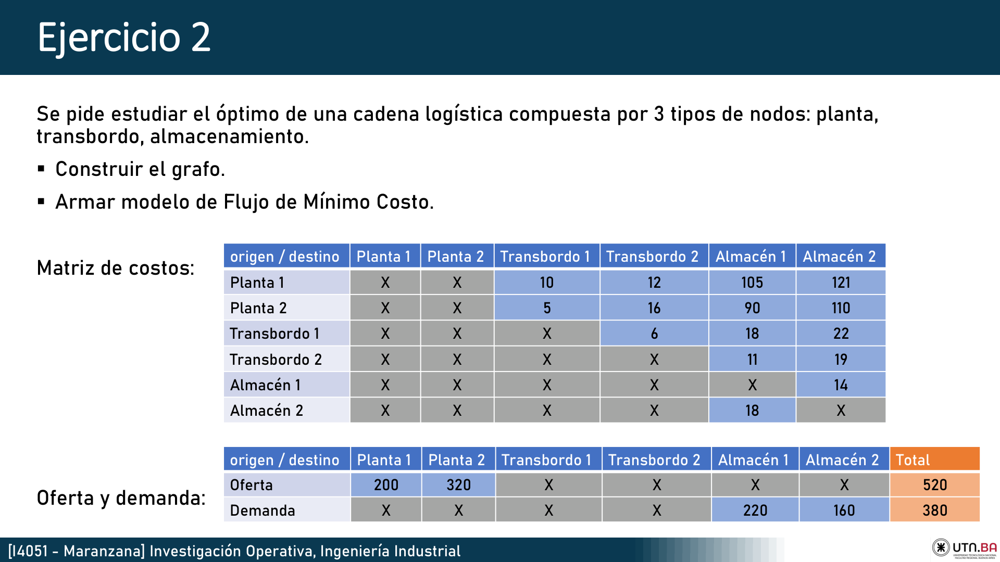
• Oferta Total: Planta 1 (200) + Planta 2 (320) = 520 unidades.
• Demanda Total: Almacén 1 (220) + Almacén 2 (160) = 380 unidades.
Como \(\sum O_i (520) > \sum D_j (380)\), hay un exceso de oferta de 140 unidades.
Regla de Cátedra: Se agrega un Almacén Ficticio (Destino Ficticio) con demanda igual a 140 unidades y costos de transporte iguales a 0 desde todos los orígenes.
Variables: \(x_{ij} \ge 0\) flujo desde el nodo \(i\) al nodo \(j\).
$$\text{Min } Z = 10 x_{P1,T1} + 12 x_{P1,T2} + 105 x_{P1,A1} + 121 x_{P1,A2} + 5 x_{P2,T1} + 16 x_{P2,T2} + 90 x_{P2,A1} + 110 x_{P2,A2} + 6 x_{T1,T2} + 18 x_{T1,A1} + 22 x_{T1,A2} + 11 x_{T2,A1} + 19 x_{T2,A2} + 14 x_{A1,A2} + 18 x_{A2,A1}$$
Sujeto a restricciones de conservación de flujo (\(\text{Salidas} - \text{Entradas} = \text{Balance}\)):
• Nodo P1 (Planta 1): \(x_{P1,T1} + x_{P1,T2} + x_{P1,A1} + x_{P1,A2} + x_{P1,\text{Fict}} = 200\)
• Nodo P2 (Planta 2): \(x_{P2,T1} + x_{P2,T2} + x_{P2,A1} + x_{P2,A2} + x_{P2,\text{Fict}} = 320\)
• Nodo T1 (Transbordo 1): \((x_{T1,T2} + x_{T1,A1} + x_{T1,A2}) - (x_{P1,T1} + x_{P2,T1}) = 0\)
• Nodo T2 (Transbordo 2): \((x_{T2,A1} + x_{T2,A2}) - (x_{P1,T2} + x_{P2,T2} + x_{T1,T2}) = 0\)
• Nodo A1 (Almacén 1): \((x_{P1,A1} + x_{P2,A1} + x_{T1,A1} + x_{T2,A1} + x_{A2,A1}) - x_{A1,A2} = 220\)
• Nodo A2 (Almacén 2): \((x_{P1,A2} + x_{P2,A2} + x_{T1,A2} + x_{T2,A2} + x_{A1,A2}) - x_{A2,A1} = 160\)
• Nodo Ficticio: \(x_{P1,\text{Fict}} + x_{P2,\text{Fict}} = 140\) con \(x_{ij} \ge 0\).
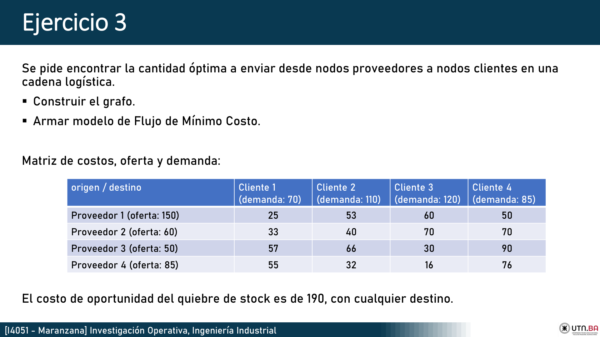
• Oferta Total (Proveedores 1, 2, 3, 4): \(150 + 60 + 50 + 85 = \mathbf{345 \text{ unidades}}\).
• Demanda Total (Clientes 1, 2, 3, 4): \(70 + 110 + 120 + 85 = \mathbf{385 \text{ unidades}}\).
Faltan 40 unidades para satisfacer la demanda del mercado (\(\text{Déficit} = 385 - 345 = 40\)).
Se crea un Proveedor Ficticio (Origen Ficticio) con oferta = 40.
¡ALERTA DE EXAMEN! Como el enunciado establece que "el costo de oportunidad del quiebre de stock es de $190 con cualquier destino", los costos de la fila ficticia NO SE PONEN EN CERO, sino que se asigna:
$$c_{\text{Fict}, 1} = 190, \quad c_{\text{Fict}, 2} = 190, \quad c_{\text{Fict}, 3} = 190, \quad c_{\text{Fict}, 4} = 190$$
De esta manera, el algoritmo MODI/Vogel buscará satisfacer primero aquellos clientes cuyas rutas tengan costos inferiores a $190, minimizando la penalización total incurrida por la empresa.
3 ejercicios reales de examen y cátedra completamente resueltos: reducción por filas y columnas, trazado de líneas mínimas, ajuste con constante \(k\), y variante de maximización.
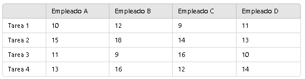
| Empleado \ Tarea | T1 | T2 | T3 | T4 | Mínimo Fila |
|---|---|---|---|---|---|
| E1 | 14 | 10 | 8 | 12 | 8 |
| E2 | 11 | 15 | 12 | 10 | 10 |
| E3 | 9 | 12 | 14 | 11 | 9 |
| E4 | 13 | 11 | 10 | 14 | 10 |
| Empleado \ Tarea | T1 | T2 | T3 | T4 |
|---|---|---|---|---|
| E1 (resta 8) | 6 | 2 | 0 | 4 |
| E2 (resta 10) | 1 | 5 | 2 | 0 |
| E3 (resta 9) | 0 | 3 | 5 | 2 |
| E4 (resta 10) | 3 | 1 | 0 | 4 |
| Mínimo Columna | 0 | 1 | 0 | 0 |
Restamos 1 en la columna T2 (las demás columnas ya tienen al menos un cero):
| Empleado \ Tarea | T1 | T2 | T3 | T4 |
|---|---|---|---|---|
| E1 | 6 | 1 | 0 | 4 |
| E2 | 1 | 4 | 2 | 0 |
| E3 | 0 | 2 | 5 | 2 |
| E4 | 3 | 0 | 0 | 4 |
Cubrimos todos los ceros con líneas rectas:
• Línea 1: Columna T1 | Línea 2: Fila E4 | Línea 3: Columna T3 | Línea 4: Fila E2.
Se requieren 4 líneas rectas (igual a la dimensión \(n=4\)) \(\implies\) SE ALCANZÓ EL ÓPTIMO.
| Asignación Óptima | Costo Original en Matriz |
|---|---|
| Empleado 1 \(\to\) Tarea 3 | $8 |
| Empleado 2 \(\to\) Tarea 4 | $10 |
| Empleado 3 \(\to\) Tarea 1 | $9 |
| Empleado 4 \(\to\) Tarea 2 | $11 |
| COSTO TOTAL MÍNIMO (\(Z^*\)) | $38 |
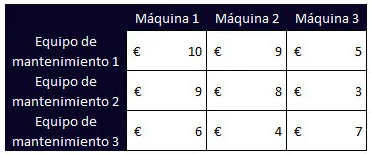
En la resolución oficial de la captura observamos que con 3 líneas se cubrían todos los ceros de una matriz \(4 \times 4\). En ese caso:
1. Se busca el menor elemento no cubierto por ninguna línea: \(k = 1\).
2. Se resta \(k\) a todos los elementos no cubiertos.
3. Se suma \(k\) a los elementos que están en la intersección de dos líneas rectas.
4. Los elementos cubiertos por una sola línea permanecen inalterados.
Esto genera nuevos ceros independientes que permiten alcanzar la dimensión \(n=4\) y cerrar la asignación unívoca.
2 ejercicios reales completamente resueltos: lote óptimo de Wilson con análisis de sensibilidad de desvíos (+20%), y el modelo multiproducto con restricción de bodega de 2.000 m² resuelto mediante multiplicadores de Lagrange.
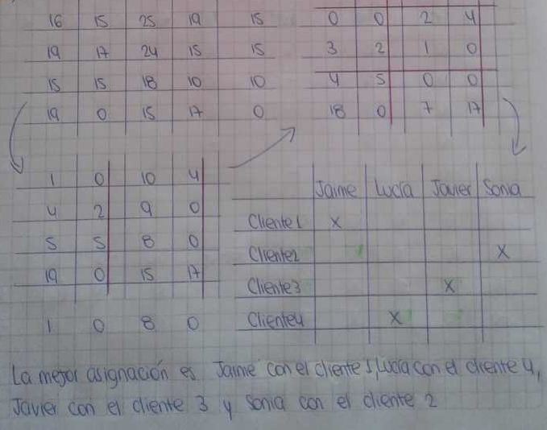
Datos: Demanda \(D = 16.000\) un/año, Setup \(k = \$100\) / orden, Almacenamiento \(c_1 = \$5\) / un \(\cdot\) año, Precio \(p = \$4.000\) / un:
• Frecuencia anual: \(n^* = \frac{D}{Q^*} = \frac{16.000}{800} = \mathbf{20 \text{ órdenes/año}}\).
• Ciclo entre pedidos: \(T^* = \frac{800}{16.000} \times 365 = \mathbf{18.25 \text{ días}}\).
Tamaño de lote real adoptado: \(Q_{\text{real}} = 1.20 \times 800 = \mathbf{960 \text{ unidades}}\).
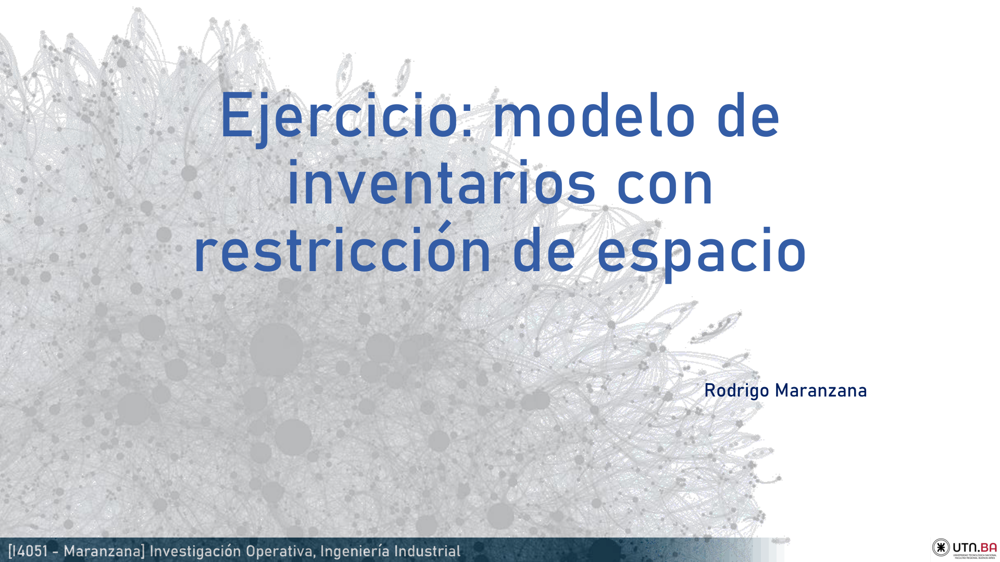
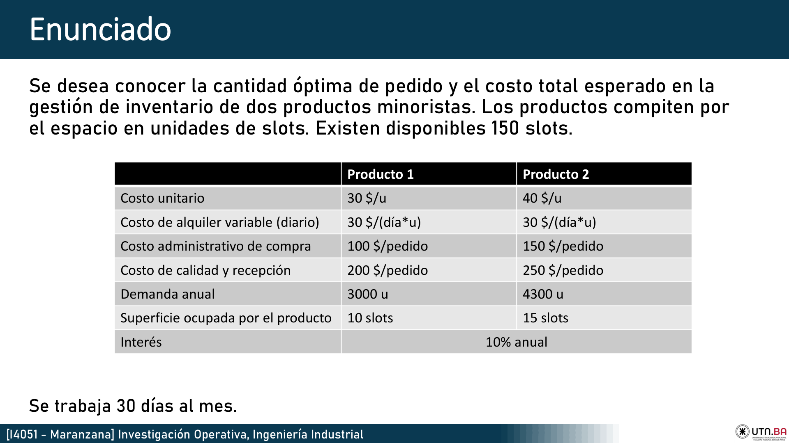
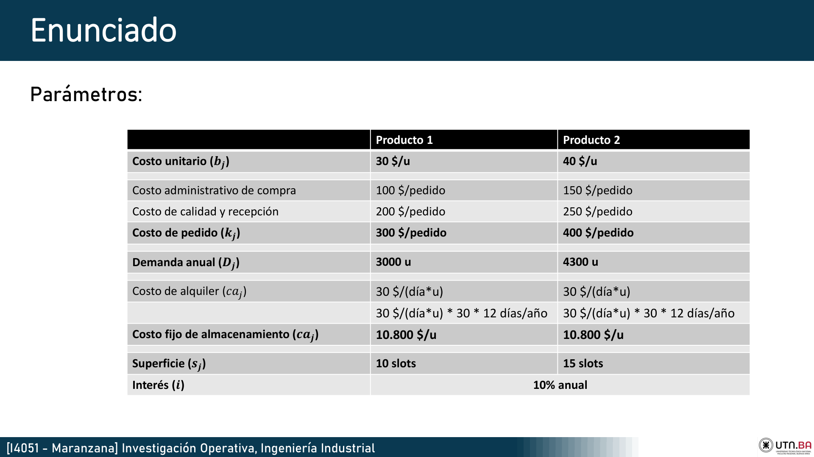
Primero se calculan los lotes óptimos libres para cada producto \(i\): \(Q_i^0 = \sqrt{\frac{2 k_i D_i}{c_{1i}}}\).
Al evaluar el espacio físico requerido: \(\sum f_i Q_i^0 > 2.000 \text{ m}^2\), la bodega queda desbordada. Por lo tanto, la restricción de espacio está activa.
Formulamos la función de Lagrange con multiplicador \(\lambda > 0\):
Derivando respecto a cada \(Q_i\) e igualando a cero:
2 ejercicios reales de cátedra completamente resueltos: búsqueda del camino más corto mediante el algoritmo de Dijkstra y modelo de recubrimiento binario de cuarteles de emergencia con justificación de por qué Simplex no es aplicable.
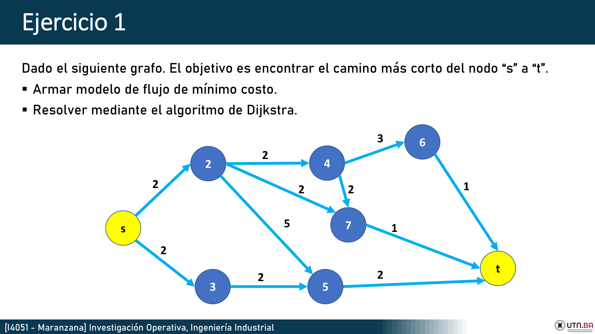
El problema de camino más corto puede formularse como un problema de transporte con 1 unidad saliendo de \(s\) y llegando a \(t\):
$$\text{Min } Z = 4 x_{sa} + 2 x_{sb} + 2 x_{ac} + 3 x_{bc} + 6 x_{bd} + 1 x_{cd} + 7 x_{ct} + 3 x_{dt}$$
Sujeto a conservación de flujo:
• Nodo \(s\): \(x_{sa} + x_{sb} = 1\)
• Nodo \(a\): \(x_{ac} - x_{sa} = 0\)
• Nodo \(b\): \(x_{bc} + x_{bd} - x_{sb} = 0\)
• Nodo \(c\): \(x_{cd} + x_{ct} - (x_{ac} + x_{bc}) = 0\)
• Nodo \(d\): \(x_{dt} - (x_{bd} + x_{cd}) = 0\)
• Nodo \(t\): \(-(x_{ct} + x_{dt}) = -1\) con \(x_{ij} \in \{0, 1\}\).
Cada etiqueta tiene el formato \([d_j, \text{predecesor}]\):
| Iteración | Nodo Fijado Permanente | Distancia Acumulada | Nodos Vecinos Actualizados |
|---|---|---|---|
| 0 | Origen \(s\) | 0 | \(a [4, s]\), \(b [2, s]\) |
| 1 | Nodo \(b\) (menor: 2) | 2 | \(c [2+3=5, b]\), \(d [2+6=8, b]\) |
| 2 | Nodo \(a\) (menor: 4) | 4 | \(c [\min(5, 4+2)=5, a]\) |
| 3 | Nodo \(c\) (menor: 5) | 5 | \(d [\min(8, 5+1)=6, c]\), \(t [5+7=12, c]\) |
| 4 | Nodo \(d\) (menor: 6) | 6 | \(t [\min(12, 6+3)=9, d]\) |
| 5 | Destino \(t\) (PERMANENTE) | 9 | Fin del algoritmo |
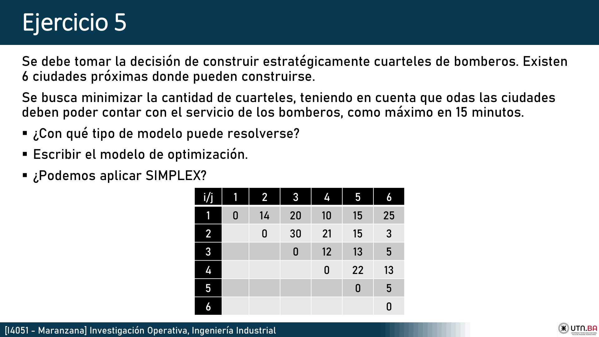
Revisamos en la matriz original cuáles ciudades están a 15 minutos o menos de cada distrito \(i\):
• Zona 1: cubierta por ciudades \(\{1, 2, 4, 5\}\) (tiempos: 0, 14, 10, 15).
• Zona 2: cubierta por ciudades \(\{1, 2, 5, 6\}\) (tiempos: 14, 0, 15, 3).
• Zona 3: cubierta por ciudades \(\{3, 4, 5, 6\}\) (tiempos: 0, 12, 13, 5).
• Zona 4: cubierta por ciudades \(\{1, 3, 4, 6\}\) (tiempos: 10, 12, 0, 13).
• Zona 5: cubierta por ciudades \(\{1, 2, 3, 5, 6\}\) (tiempos: 15, 15, 13, 0, 5).
• Zona 6: cubierta por ciudades \(\{2, 3, 4, 5, 6\}\) (tiempos: 3, 5, 13, 5, 0).
Solución Óptima: Se logran cubrir las 6 ciudades con sólo 2 cuarteles: por ejemplo, construyendo en Ciudad 1 y Ciudad 3 (\(x_1=1, x_3=1 \implies Z^* = 2\)), o alternativamente en Ciudad 2 y Ciudad 4 (\(Z^* = 2\)).
NO, NO SE PUEDE APLICAR EL MÉTODO SIMPLEX.
Justificación Rigurosa de Cátedra:
1. Violación de la Hipótesis de Divisibilidad: El método Simplex requiere variables reales continuas (\(x_j \in \mathbb{R}_{\ge 0}\)). En este problema las decisiones son estrictamente binarias e indivisibles (\(x_j \in \{0, 1\}\)). No tiene sentido físico construir "0.33 cuarteles de bomberos".
2. Invalidez del Redondeo: Si se resolviera la relajación lineal continua con Simplex y luego se intentara redondear, la solución obtenida podría ser infactible (dejando distritos desprotegidos) o muy alejada del óptimo entero real.
3. Algoritmo Correcto: Se debe resolver mediante técnicas exactas de Programación Lineal Entera, principalmente el algoritmo de Branch & Bound (Ramificación y Acotamiento) o generación de planos de corte.
Colección completa de preguntas reales tomadas entre 2016 y 2024 con sus respuestas y justificaciones formales de cátedra.
Identificación en el Primal: En la tabla Simplex (en maximización), ocurre cuando una variable no básica es candidata a entrar a la base porque su costo reducido es negativo (\((z_j - c_j) < 0\)), pero todos los elementos de su columna en la tabla son menores o iguales a cero (\(y_{ik} \le 0, \forall i\)). En consecuencia, no se puede calcular el cociente \(\theta\) (no hay variable saliente que limite el crecimiento) y la variable puede aumentar al infinito haciendo que \(Z \to +\infty\).
Correspondencia en el Dual: Por el Teorema Fundamental de Dualidad, si el Primal posee solución no acotada, el Dual es obligatoriamente INCOMPATIBLE (no posee región factible).
Identificación en el Primal: En la Tabla Óptima Primal (TOP), ocurre cuando al menos una variable NO BÁSICA tiene costo reducido nulo (\((z_j - c_j) = 0\)). Esto indica que dicha variable puede entrar a la base sin modificar el valor óptimo de \(Z^*\), alcanzando un vértice alternativo con la misma ganancia máxima. Gráficamente, la recta de la Función Objetivo es paralela a una restricción activa.
Correspondencia en el Dual: Una solución óptima alternativa en el Primal corresponde a una Solución DEGENERADA en el Dual (al menos una variable básica del dual adopta valor cero en la tabla óptima).
Respuesta de Cátedra: La curva de oferta relaciona la cantidad óptima producida (\(x_j^*\)) en función de su precio de venta (\(c_j\)). Se obtiene realizando un Análisis de Sensibilidad Paramétrico sobre el coeficiente \(c_j\) en la Función Objetivo.
Al variar \(c_j\) desde 0 hacia \(+\infty\): mientras \(c_j < \text{costo de oportunidad dual } (\sum y_i^* a_{ij})\), la producción es cero (\(x_j^* = 0\)). Al alcanzar el umbral de rentabilidad (\(c_j = z_j\)), la variable entra a la base saltando al valor del vértice. A mayores precios se activan nuevos vértices, conformando una función de oferta escalonada no decreciente.
NO, ES ABSOLUTAMENTE IMPOSIBLE.
Justificación: Por el Teorema Fuerte de Dualidad, si uno de los problemas posee una solución factible óptima finita, el otro también posee solución óptima finita y los valores óptimos de sus funciones objetivo son rigurosamente idénticos: $$Z_{\text{primal}}^* = W_{\text{dual}}^*$$ La única excepción ocurre cuando uno es no acotado y el otro incompatible, en cuyo caso ninguno posee óptimo finito.
FALSA.
Justificación: La matriz de transporte puede ser perfectamente rectangular (\(m\) orígenes y \(n\) destinos con \(m \ne n\)). El único requisito matemático es que esté balanceada en flujos (\(\sum O_i = \sum D_j\)). La exigencia de matriz cuadrada corresponde con exclusividad al Problema de Asignación.
VERDADERA.
Justificación: El modelo de transporte es un caso particular de PLC. Su matriz de restricciones posee la propiedad matemática de Total Unimodularidad (todo determinante de base vale \(\pm 1\)), lo que asegura que todos los vértices del poliedro sean números enteros, por lo que Simplex continuo siempre arroja una solución entera natural sin requerir Branch & Bound.
FALSA.
Justificación: Viola la restricción fundamental de unicidad y biyección (\(\sum_j x_{ij} = 1\) y \(\sum_i x_{ij} = 1\) con \(x_{ij} \in \{0, 1\}\)). Cada recurso debe asignarse a una y exactamente una tarea. Si un recurso pudiera repartirse, el problema dejaría de ser de asignación y pasaría a ser de transporte general.
Respuesta: Para mantener la coherencia dimensional de las tasas. La tasa de demanda (\(D\)) y el costo unitario de almacenamiento (\(c_1\)) deben medirse en la misma escala temporal (usualmente anual). Si la demanda se ingresa anual y el almacenamiento mensual, el lote óptimo calculado quedará distorsionado por un factor de \(\sqrt{12} \approx 3.46\), arruinando la política de inventarios.
Respuesta: Porque comparten un recurso físico común y acotado (\(\sum f_i Q_i \le B\)). Al calcularlos por separado, cada producto adoptará su lote de Wilson libre saturando el galpón. Se debe resolver conjuntamente mediante Multiplicadores de Lagrange (\(\lambda > 0\)), donde el costo efectivo de almacenar pasa a ser \((c_{1i} + 2\lambda f_i)\), penalizando con mayor rigor a los productos que ocupan más metros cuadrados (\(f_i\)).
Calculá en tiempo real lotes óptimos con simulación de desvíos, verificá balances de transporte y autoevaluate con el test interactivo de 10 preguntas.
Ingresá los valores del problema para obtener automáticamente los parámetros óptimos y simular en tiempo real el impacto de un desvío porcentual:
Ingresá las ofertas y demandas separadas por comas para comprobar si la red requiere nodos ficticios:
Seleccioná tu opción en cada pregunta. Recibirás retroalimentación instantánea con la justificación técnica de cátedra.
Respondé las 10 preguntas para ver tu evaluación final.